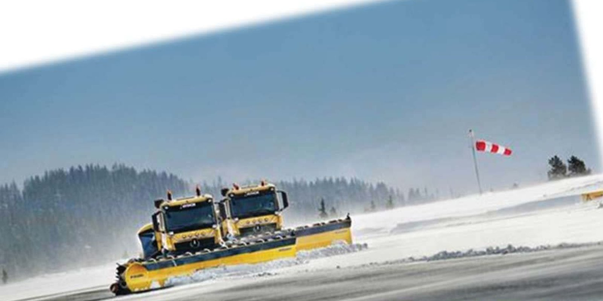
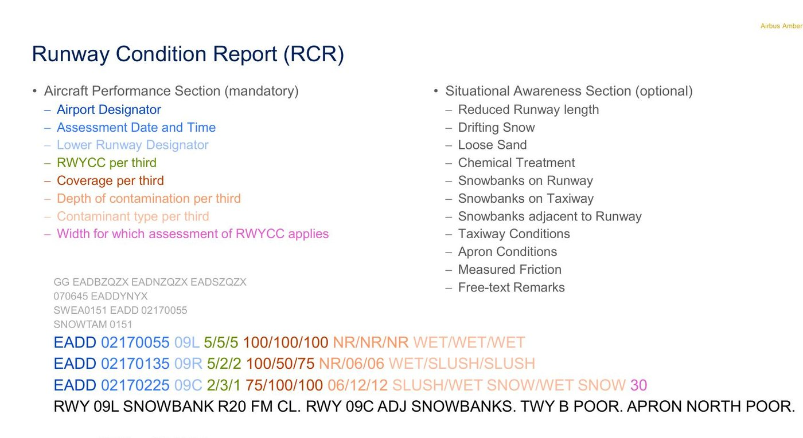

Module 3 · The RCR
Lesson 07: The RCR — Principles and Triggers
Lesson 7 of 10 · about 12 min
Learning objectives
- Describe the two sections of the RCR.
- List the events that require a new RCR.
- Apply the significant change criteria for coverage and depth.

Two sections
Tap a card to turn it over.

When to write an RCR
- A contaminant appears (e.g. water on a dry runway).
- The contaminant type changes (e.g. thin dry snow turns to water).
- The reported coverage changes.
- The reported depth changes significantly.
- New relevant information arrives: AIREPs, weather, decontamination, one LESS THAN POOR or two consecutive POOR.
The need for an RCR triggers an inspection — and an inspection can trigger an RCR. Inspections are either scheduled or "special".
Coverage changes
Is a new RCR needed? Tap to check.
Depth changes
A change of depth is significant when it changes the RWYCC, or when the increase of the reported depth reaches a fixed value:

Is a new RCR needed? Tap to check.
Key takeaways
- RCR = mandatory performance section + optional situational awareness section.
- New RCR: new contaminant, type change, reported coverage change, significant depth change, new information.
- Significant depth change: water 3 mm, slush 3 mm, wet snow 5 mm, dry snow 20 mm.
Knowledge check
The coverage on a third increases from 80 % to 100 %. Is a new RCR required for this reason?
- Yes
- No — the reported coverage remains 100
- Only at night
- Only if the RWYCC is 6
Answer: B. The reported value is already 100: no change in the RCR.